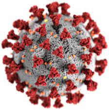

Varianti Covid |
Immagine |
Descrizione |
|---|---|---|
Covid-19 |
 | La sindrome respiratoria acuta grave Coronavirus-2 (SARS-CoV-2) è il nome dato al nuovo coronavirus del 2019. COVID-19 è il nome dato alla malattia associata al virus. SARS-CoV-2 è un nuovo ceppo di coronavirus che non è stato precedentemente identificato nell'uomo. |
Covid-19 variante inglese |
Prima identificata (dicembre 2020) e nota anche come B.1.1.7, interessa proprio il sito di legame del virus alla cellula, ed è diventata la variante che circola di più nel Regno Unito – interessando oltre il 70% delle nuove infezioni - e da lì si è diffusa in tutta Europa e in circa 60 altri Paesi. È caratterizzata da una maggiore capacità di trasmettersi da uomo a uomo (l'aumento di trasmissibilità stimato è circa del 39%) e di conseguenza ha comportato un aumento importante del numero dei casi, dei ricoveri e della pressione sul sistema sanitario inglese. |
|
Covid-19 variante sudafricana |
Anche questa (variante B.1.351.V2) è stata identificata nel dicembre 2020 ed è ora la più diffusa in Sud Africa. Come quella inglese ha anch'essa una maggiore capacità di trasmettersi da un soggetto all'altro anche se inferiore a quella della variante inglese. Da gennaio 2021 è stata isolata in almeno 20 altri paesi Europei e ha colpito anche persone che non sono state in Sud Africa. Questo suggerisce che questa variante sia in realtà più diffusa di quanto si pensi. |
|
Covid-19 variante brasiliana |
La variante brasiliana è stata inizialmente identificata in Brasile a gennaio 2021, ma la sua presenza è stata subito segnalata in Giappone e Corea del Sud. In Italia le stime dell'ISS considerano i contagi da quella brasiliana interessino circa il 4,3% della popolazione. Sarebbe più frequente in Umbria (36,2%), Toscana (23,8%) e Lazio (13,2%). Casi sono stati segnalati in Emilia Romagna, Lazio (Latina), Abruzzo. |
|
Covid-19 variante indiana |
Non è ancora chiaro se sia più contagiosa e più letale né se sia davvero alla base del boom di contagi nel paese. Ma va monitorata perché le due mutazioni della proteina spike possono impensierirci |